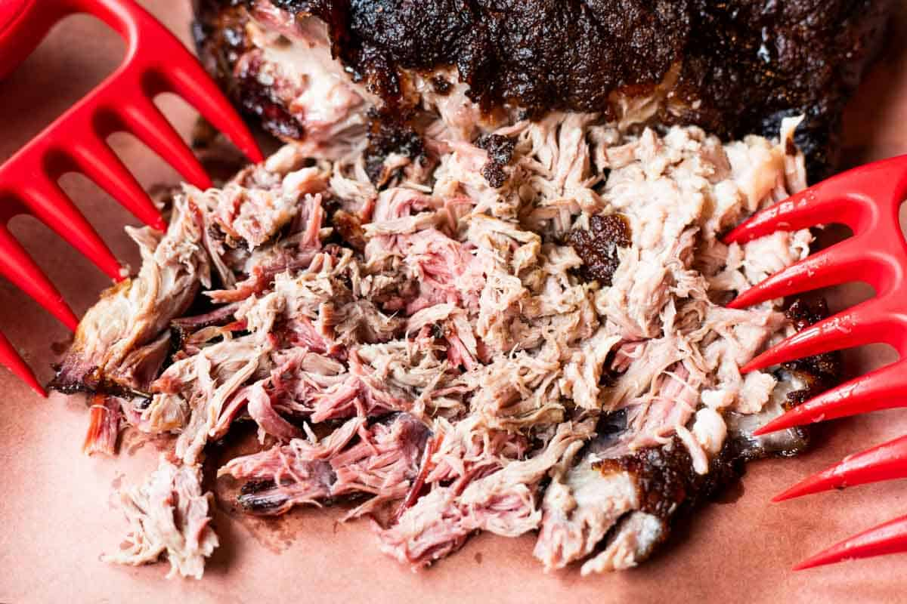

Pulled Pork

This pulled pork will blow your socks off.
Trust me, I know how to make 2 paragraphs in an HTML doc
Ingredients
- Roughly 9 pound pork butt
- Holy Gospel Rub
- Half stick of butter
- Half cup of light brown sugar
- Optional: Honey Hog Hot rub
Steps
- Preheat smoker to 365
- Trim pork butt (Remove unwanted fat)
- Apply generous amount of Holy Gospel Rub and let sweat for 15-30 mins
- Put on smoker and spritz with applie cider vineagar every 2 hours. Leave until bark
is desired color or until pork is around 165 interal. Should take 5-6 hours.
- Pull off smoker and put into pan. Add butter, sugar, and optional rub. Cover with foil and add back to smoker
- Leave for roughly another 3 hours until interal temp is 203-206
- Pull off and let rest for 30 mins. Pull pork and enjoy.